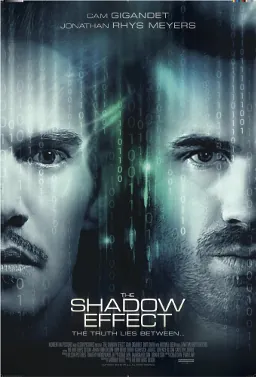

The genetics
Human cloning is the twist behind this action thriller's loop of deaths and awakenings. The protagonist turns out to be one of a series of clones of a dead Special Forces soldier, created by Dr. Reese's cloning programme and controlled by a musical trigger to carry out political assassinations, after each of which he is killed and replaced; each new clone retains memories of the previous ones. Reese is said to have begun the programme after his wife's death, but it serves the handlers who use the clones as disposable weapons. Scientists and handlers are presented as antagonists, while the clone is a victim who struggles to win back his free will, and the ending suggests that the cycle continues. The film's cloning has nothing to do with the real technique: clones do not appear as adults, nor do they inherit memories.
How genetics is portrayed
- Overall portrayal of genetics
- negative Cloning is a tool for manufacturing controllable killers, and the ominous ending suggests the programme goes on.
- Outcome of the genetic intervention
- negative The clones are used as disposable assassins who kill politicians, police and themselves, and the cycle restarts at the end.
- Dr. Reese
- villain Aim: personal, military (negative). Reese built the cloning programme after his wife's death and produces clones of a dead soldier as assassins, keeping Gabe drugged; he flees when the situation turns violent and meets the Man to close the project.
- The Man and Sheriff Hodge
- villain Aim: malevolent (negative). They trigger the clones with music, send them to assassinate targets and kill them when they deviate; Gabe finally kills Hodge.
The story
Gabe Howarth, who runs a restaurant with his wife Brinn, suffers seizures triggered by certain music and wakes each day from vivid memories of assassinations: he kills a politician on a boat and blows himself up, pushes a man under a subway train, and is shot by his friend Sheriff Hodge, each time waking up at home. Refusing the drugs prescribed by Dr. Reese, he learns to resist the music and the orders given by a mysterious 'Man', discovers that Brinn is part of the scheme and confronts Reese. Reese reveals that after his wife died he built a programme to recreate people as clones, and that Gabe is a clone of a dead Special Forces soldier, made to be a perfect killing machine under the command of Hodge, the soldier's former commander; each clone recovers memories of the previous ones. Gabe kills Hodge and saves Brinn, but a new Gabe wakes to the music again.